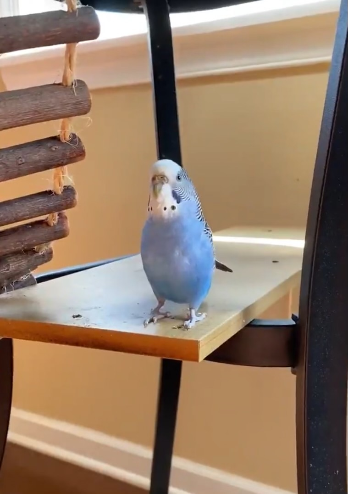

Pets
Carlos

Carlos is a blue parakeet/budgerigar that my older sister adopted from her friend in high school. Carlos is 9 years old and loves flying around the kitchen and standing on chandeliers. She has very loud chirps and loves to chatter when people play instruments. Although she can be aggressive at times and is very unfriendly towards strangers, she has a very soft bite.
Carlos has a sister named Einstein. We did not discover the genders of our pet birds until years after we named them. At night, Carlos always sleeps on her favorite yellow swing and will wake up in the same spot every morning in the upstairs of her cage ready to come out and play.
Photo Gallery


Likes
- Spinach
- Flying around
- Taking baths